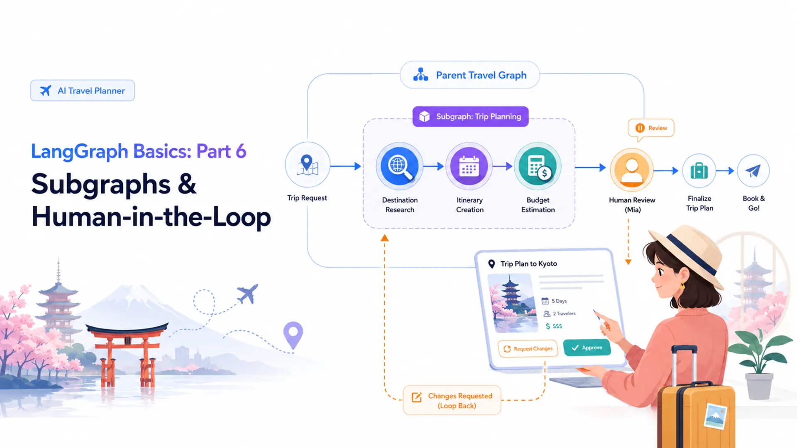
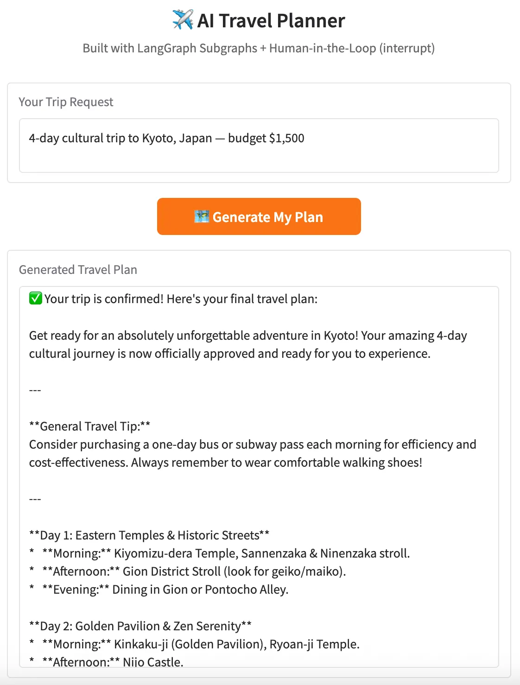

LangGraph Basics: Part 6 — Subgraphs & Human-in-the-Loop

📚 Table of Contents
- 1. Why Graphs Need Subgraphs & Human Control
- 1.1 Subgraphs: Nesting Graphs Inside Graphs
- 1.2 Human-in-the-Loop: Keeping Humans in Charge
- 1.3 Our Scenario: AI Travel Planner
- 2. Installation & Setup
- 3. Subgraphs: Concept & API
- 3.1 What Makes a Subgraph Different
- 3.2 State Isolation: Private vs Shared State
- 3.3 Building, Compiling & Calling a Subgraph
- 4. Human-in-the-Loop: interrupt() and Command
- 4.1 How interrupt() Pauses Execution
- 4.2 Resuming with Command(resume=...)
- 4.3 Why MemorySaver Is Required for HITL
- 5. Complete Example: AI Travel Planner
- 5.1 Architecture Overview
- 5.2 Project Structure
- 5.3 State Design (state.py)
- 5.4 Planner Subgraph (subgraph.py)
- 5.5 Parent Graph Nodes (nodes.py)
- 5.6 Graph Assembly (graph.py)
- 5.7 Runner & Console Output (travel_runner.py)
- 5.8 Graph Diagram
- 6. Web Interface
- 7. Conclusion
🗺️ 1. Why Graphs Need Subgraphs & Human Control
The first five parts of this series built every foundational piece of LangGraph: nodes, edges, state, reducers, conditional routing, checkpointers, streaming, and tool calling. You can now assemble a working AI agent in a single graph file. But what happens when that graph grows? A real-world application — say, one that plans a trip, routes customer tickets, or generates a research report — quickly becomes a tangle of dozens of nodes, complex routing, and mixed responsibilities. Two features address this directly: subgraphs let you split a large graph into composable, independently testable modules, and Human-in-the-Loop lets you pause execution mid-run so a person can review, correct, or approve before the graph continues.
🧩 Subgraphs: Nesting Graphs Inside Graphs
A subgraph is a compiled StateGraph that is used as a node inside another graph. From the outside, the parent graph sees it as just another callable — it receives a state dict, runs its internal pipeline, and returns an updated state dict. The internal nodes, edges, and state keys are completely invisible to the parent. This is the same modular thinking you use when breaking a large Python program into functions and classes: hide the complexity, expose only the interface.
Private State
Each subgraph has its own TypedDict. Its internal keys never pollute the parent's state namespace.
Reusable Module
The same compiled subgraph can be called multiple times within one parent graph or shared across different parent graphs.
Independently Testable
Because it is a compiled graph, you can invoke a subgraph directly in isolation — no need to run the full parent to test it.
Composable Architecture
Large multi-agent systems (supervisor + workers) are built by nesting multiple subgraphs under a coordinator parent graph.
🛑 Human-in-the-Loop: Keeping Humans in Charge
Human-in-the-Loop (HITL) is the ability to pause a running graph, show something to a human, and wait for their response before continuing. You might need this when the stakes are too high to let an AI act alone — booking a flight, sending an email, deleting data, committing a purchase. In LangGraph, HITL is implemented with two primitives: interrupt() suspends the graph at a specific node and captures an optional payload to show the user, and Command(resume=...) resumes the graph from where it stopped, injecting the human's response back into state.
🔗 Key distinction: interrupt() is not an exception or an error — it is a controlled pause. The graph's full state (including conversation history and intermediate results) is preserved in the checkpointer. When the human responds, execution resumes from the exact node that called interrupt(), as if nothing happened.
✈️ Our Scenario: AI Travel Planner
Picture a traveler — let's call her Mia — who wants an AI to build her a complete trip plan. She types: "4-day cultural trip to Kyoto, Japan — budget $1,500." The AI needs to research the destination, build a day-by-day itinerary, and estimate costs. That is three distinct LLM tasks, each depending on the previous result — a perfect job for a subgraph. But before anything is booked, Mia needs to review and approve (or revise) the plan. That requires Human-in-the-Loop.
The application is structured as two graphs. The PlannerSubGraph handles the AI work: research the destination → create the itinerary → estimate the budget, all with their own private state. The TravelGraph (the parent) calls the subgraph as a single node, then pauses at human_review for Mia's feedback. If she approves, the graph writes a final confirmation. If she asks for changes, the graph loops back and re-runs the subgraph with her revision notes. This scenario requires both concepts taught in this post and would be impossible without them.
⚙️ 2. Installation & Setup
The Travel Planner shares the same environment as every other post in this series. All packages live in the root langgraph/ folder — one virtual environment, one requirements.txt, one .env file.
Step 1 — Python version. This project requires Python 3.12.
Step 2 — Virtual environment.
Step 3 — Install dependencies. The requirements.txt is shared at the langgraph/ folder level:
Step 4 — Gemini API key. Get your free key from Google AI Studio. Create a .env file inside langgraph/:
⚠️ Add .env to your .gitignore — never commit API keys to a public repository.
🤖 Configuring the LLM
config.py loads the .env file and exposes settings as class attributes. llm.py wraps ChatGoogleGenerativeAI in a GeminiLLM class that every node imports.
Every node that needs the LLM calls GeminiLLM().get_llm() once in __init__ and stores the result. This keeps the model instantiation in one place and makes it easy to swap providers later.
🧩 3. Subgraphs: Concept & API
Before writing a subgraph, it helps to understand exactly how it differs from a regular node and why state isolation matters.
⚖️ What Makes a Subgraph Different from a Regular Node
A regular node is a Python function: it receives the current state, does something, and returns a partial update. A subgraph is a compiled graph used where a function would normally go. When the parent graph reaches the subgraph node, LangGraph invokes the compiled subgraph with the supplied input state, runs its full internal pipeline, and merges the result back into the parent's state.
| Aspect | Regular Node | Subgraph Node |
|---|---|---|
| What it is | A Python callable | A compiled StateGraph |
| Internal structure | Flat — single function body | Multiple nodes & edges inside |
| State | Reads/writes parent state keys | Has its own private TypedDict |
| Testability | Unit-test the function directly | Invoke the subgraph independently |
| Reusability | Call the function from anywhere | Compile once, nest anywhere |
🔒 State Isolation: Private vs Shared State
The most important rule of subgraphs is this: the subgraph's state keys never appear in the parent's state. The parent hands the subgraph an input, the subgraph runs its pipeline internally, and the parent reads back only the keys it cares about from the result. Neither side can accidentally read or overwrite the other's private keys.
In the Travel Planner, the subgraph uses PlannerState with four keys: trip_request, destination_info, itinerary, and budget_estimate. These represent the pipeline's intermediate and final outputs. The parent graph uses TravelState, which also has itinerary and budget_estimate — but those are copied over from the subgraph result by the run_planner node, not shared directly.
📌 Why does isolation matter? Imagine a subgraph that uses a key called messages to track intermediate LLM conversation steps. Without isolation, those internal messages would accumulate in the parent's messages field alongside the main conversation — corrupting the chat history. Private state prevents this class of bug entirely.
🔧 Building, Compiling & Calling a Subgraph
The three steps to use a subgraph are: define its state, build and compile it (just like any graph), then call .invoke() on the compiled object from inside a parent node. Here is the minimal pattern:
Notice that outer_node builds the input dict manually, passing only the keys InnerState expects. It then reads only result from the subgraph's output and maps it into the parent's own key. This explicit mapping is the interface contract between parent and subgraph.
✅ Best practice: Compile the subgraph once in __init__ (not on every call). Compilation is expensive — each StateGraph.compile() call validates the graph structure and builds internal routing tables. Store the compiled result and reuse it.
🛑 4. Human-in-the-Loop: interrupt() and Command
Now that subgraphs handle modularity, let's tackle the second concept: pausing a graph mid-run for human input. This section explains the two primitives — interrupt() and Command — and why a checkpointer is non-negotiable.
⏸️ How interrupt() Pauses Execution
Calling interrupt(payload) inside a node tells LangGraph to stop graph execution immediately at that point and surface the payload to the caller. The caller (your application code) can then display the payload to the user and wait. The graph's full state — including every message, every intermediate result, every prior node output — is frozen in the checkpointer.
A few things to notice: interrupt() takes any serialisable Python value as its payload — a string, a dict, a list. That value is what your application code receives from the first invoke() call, which you can display in a UI. The return value of interrupt() — assigned to feedback — is not set yet. It will be filled in only when the graph is resumed with Command(resume=...).
▶️ Resuming with Command(resume=...)
After the human has responded, you resume the paused graph by passing a Command object to invoke() instead of a state dict. Command(resume=value) tells LangGraph: "wake up the paused graph, set the return value of interrupt() to value, and continue from where you left off."
The config dict must carry the same thread_id in both calls. LangGraph uses the thread ID to find the correct paused state in the checkpointer. If the thread ID does not match, the resume will fail or start a new conversation.
💡 Multiple revision rounds: If the human requests changes instead of approving, the graph can loop back (via a conditional edge) and call the subgraph again with the revision feedback. The same thread_id is reused across all rounds — the checkpointer accumulates the full history of each round.
💾 Why MemorySaver Is Required for HITL
Human-in-the-Loop requires a checkpointer. When interrupt() is called, LangGraph serialises the entire current state and saves it to the checkpointer keyed by thread_id. Without a checkpointer, there is nowhere to persist the paused state — the graph would have no way to resume after the human responds.
MemorySaver stores the state in a Python dict — fast and zero-configuration, but it is lost when the process restarts. For a production HITL system where the human might not respond for hours, use a persistent checkpointer like SqliteSaver (introduced in Part 4) so the paused state survives server restarts.
🏗️ 5. Complete Example: AI Travel Planner
With the concepts in place, let's walk through every file in the project. Each file maps to one concept from Sections 3 and 4.
🏛️ Architecture Overview
Two graphs work together. The PlannerSubGraph is a sequential pipeline: research the destination → build the itinerary → estimate the budget. It runs inside a dedicated PlannerState and is compiled independently. The TravelGraph (parent) treats the entire subgraph as a single node called run_planner. After the plan is ready, it pauses at human_review via interrupt(). A conditional edge then routes to finalize_plan (approved) or loops back to run_planner (revision requested).
PlannerSubGraph
research_destination → create_itinerary → estimate_budget. All three nodes share PlannerState privately.
TravelGraph (parent)
run_planner → human_review → conditional → finalize_plan or back to run_planner.
interrupt() + MemorySaver
Graph pauses at human_review. State is frozen in MemorySaver. Resumes with Command(resume=feedback).
Revision Loop
If not approved, traveler feedback is merged into trip_request and the subgraph re-runs until the plan is confirmed.
📁 Project Structure
Each file maps to one part of the implementation. state.py defines both state classes (Section 5.3). subgraph.py contains the inner graph (Section 5.4). nodes.py and graph.py build the outer graph (Sections 5.5–5.6). travel_runner.py runs the demo (Section 5.7). All LLM prompts live in prompts/ as plain text files — editing a prompt never requires touching Python code.
📦 State Design — state.py
Two TypedDict classes live in state.py. They share some key names (itinerary, budget_estimate) but are completely separate types — sharing a name does not create a shared reference. The parent copies values from the subgraph result explicitly in run_planner.
TravelState has three extra keys that PlannerState does not need: human_feedback (the traveler's raw response), approved (the boolean flag the conditional edge reads), and final_plan (the polished confirmation written by finalize_plan). The subgraph never sees these keys.
🗺️ Planner Subgraph — subgraph.py
subgraph.py contains two classes: PlannerNodes (the three LLM node methods) and PlannerSubGraph (which builds, compiles, and exposes the inner graph). All three prompts are loaded from prompts/ in __init__ — only once, not on every node call.
Notice that PlannerSubGraph._build() calls graph.compile() with no checkpointer. The subgraph does not need one — it runs to completion synchronously each time the parent node calls self.planner.invoke(). The parent graph holds the checkpointer, and that is enough for the interrupt() in human_review to work.
⚙️ Parent Graph Nodes — nodes.py
TravelNodes defines the three nodes of the parent graph. The first calls the subgraph, the second uses interrupt(), and the third writes the final confirmation.
The revision logic in run_planner is worth a close look. On the first pass, human_feedback is an empty string, so trip_request is used unchanged. On a second pass (after the traveler requests changes), the feedback is appended to the original request before it is handed to the subgraph. This means the subgraph always receives a complete, self-contained request — it never needs to know about the revision history or look at TravelState directly.
🔗 Graph Assembly — graph.py
graph.py wires everything together: registers the three nodes, adds the edges, attaches MemorySaver, and exports the figure. The conditional edge after human_review reads state["approved"] and routes accordingly.
The route_after_review function is a simple one-liner, but it is what makes the revision loop possible. When approved is False, the graph goes back to run_planner — which calls the subgraph again with the updated request — and then arrives back at human_review for another round. The loop repeats until the traveler approves.
🚀 Runner & Console Output — travel_runner.py
TravelRunner wraps the compiled graph and exposes two methods: start_planning() for the first invoke and resume() for subsequent invokes. Each method passes the same thread_id so the checkpointer can match the correct paused state.
Running python travel_runner.py produces output like this (LLM text abbreviated for clarity):
📊 Graph Diagram
The diagram below shows the parent TravelGraph. run_planner wraps the entire subgraph pipeline as a single node; human_review is where interrupt() fires. The conditional edge creates the revision loop.
Figure 1: TravelGraph — run_planner invokes the PlannerSubGraph; human_review pauses with interrupt(); the conditional edge loops back for revisions.
The PlannerSubGraph is hidden inside run_planner — from the parent's perspective it is a single step. Its internal structure is a simple linear chain:
Figure 2: PlannerSubGraph — three sequential LLM nodes with their own private PlannerState.
🖥️ 6. Web Interface
The Gradio app in app.py brings the Travel Planner to the browser. Because HITL requires two separate invoke() calls, the UI needs a way to pass the same thread_id between the "Generate Plan" button click and the "Submit Response" button click. A hidden gr.State component solves this.
The UI has three phases: the traveler types their trip request and clicks "Generate My Plan" → the plan appears in a read-only textbox and an approval/feedback row becomes visible → the traveler types their response (or "approved") and clicks "Submit Response" → if approved, the final plan replaces the plan text and the feedback row hides; if revision, the revised plan shows and the row stays visible for another round.
The approval_section row starts hidden (visible=False) and only appears after the first plan is generated. This keeps the UI clean — the traveler is not asked to approve something that does not exist yet. The thread_id in gr.State is set by plan_trip and reused unchanged by every subsequent submit_feedback call, ensuring all resume calls reach the correct paused state in the checkpointer.

Figure 3: AI Travel Planner web UI — trip request input, generated plan, and approval/feedback section.
✨ What to Try
✅ 7. Conclusion
This post added two of the most powerful patterns in LangGraph to your toolkit. Subgraphs let you nest a compiled graph inside another as a reusable, black-box node with its own private state — each subgraph is independently testable, independently composable, and keeps its internals completely hidden from the parent. Human-in-the-Loop via interrupt() and Command(resume=...) lets you pause a running graph, surface information to a user, and continue only after receiving their input — enabling review-and-approve workflows that simply are not possible in a stateless pipeline.
Together, these two features address different sides of the same scaling problem. As graph complexity grows, subgraphs keep it manageable by decomposing the logic into focused, tested modules. As the stakes of automation grow, HITL keeps humans in control by inserting review checkpoints at exactly the right moments. The AI Travel Planner showed both working in tandem: a three-node subgraph handles all the LLM planning work privately, while the parent graph orchestrates the human review cycle and loops back for revisions until the traveler is satisfied.
- Subgraphs — nested compiled graphs with private state, compiled once and reused as a black-box node
- interrupt(payload) — pauses graph execution and surfaces a payload to the caller for review
- Command(resume=value) — resumes a paused graph, injecting the human's response as the return value of interrupt()
- MemorySaver — required checkpointer that persists state between the first invoke (pause) and the second invoke (resume)
- Revision loop — conditional edge that re-runs the subgraph with traveler feedback until the plan is approved
🔗 LangGraph Basics Series — Complete!
This is Part 6 of 6 in the LangGraph Basics series. You now have every foundational building block: StateGraph, nodes, edges, state, reducers, conditional routing, checkpointers, streaming, tool calling, subgraphs, and Human-in-the-Loop. The LangGraph Advanced series (Parts 14–18 of this blog) puts all of these together in five production-grade applications.
Next up is the LangGraph Advanced series — five end-to-end projects that put everything together in production-grade applications:
- Part 1 — Conversational Chatbot with Memory
- Part 2 — Multi-Agent Supervisor Architecture
- Part 3 — RAG Pipeline with Conditional Routing
- Part 4 — ReAct Agent with Tool Calling
- Part 5 — MCP Integration with LangGraph

Technical Stacks
 Python
Python
 LangGraph
LangGraph
 LangChain
LangChain
 Gemini
Gemini
 Gradio
Gradio

References
-
 GitHub Repository:
shafiqul-islam-sumon/langgraph
GitHub Repository:
shafiqul-islam-sumon/langgraph
-
LangGraph Docs — Subgraphs:
langchain-ai.github.io/langgraph/concepts/subgraphs
-
LangGraph Docs — Human-in-the-Loop:
langchain-ai.github.io/langgraph/concepts/human_in_the_loop
-
Google AI Studio (Gemini API key):
aistudio.google.com